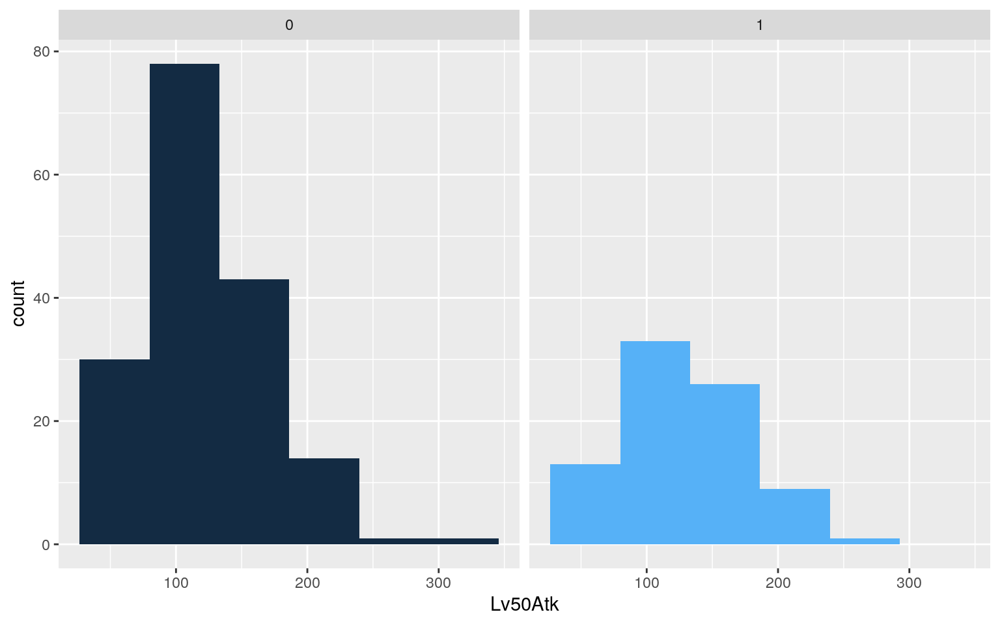
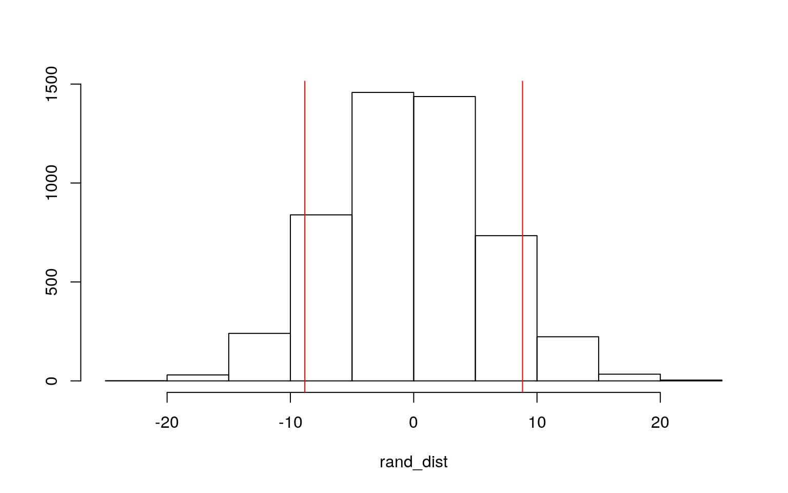
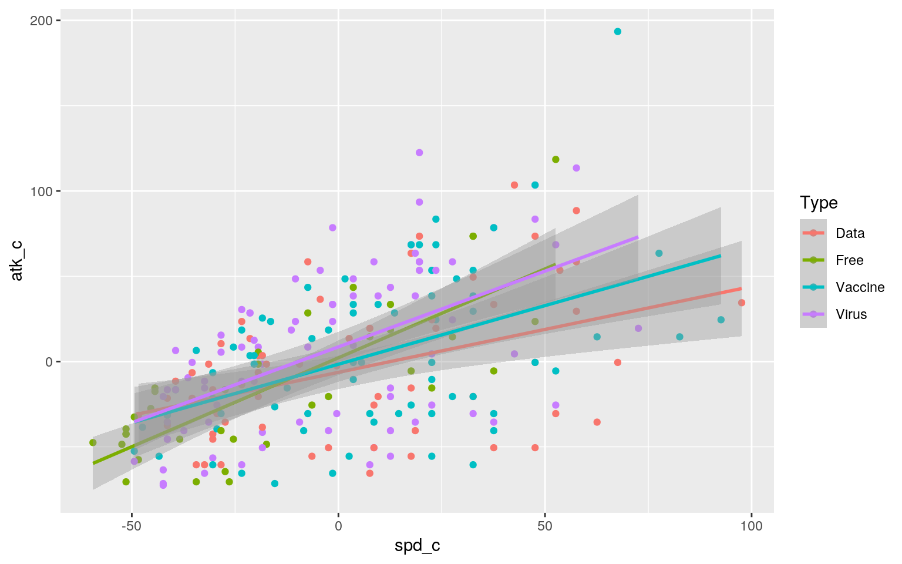
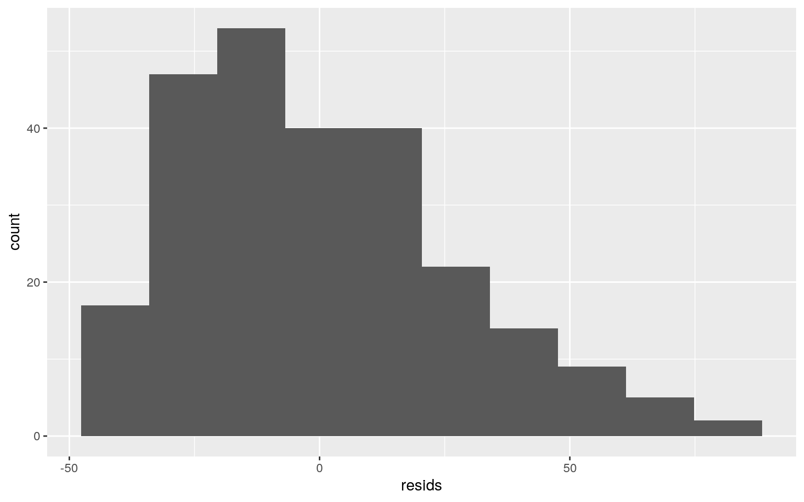
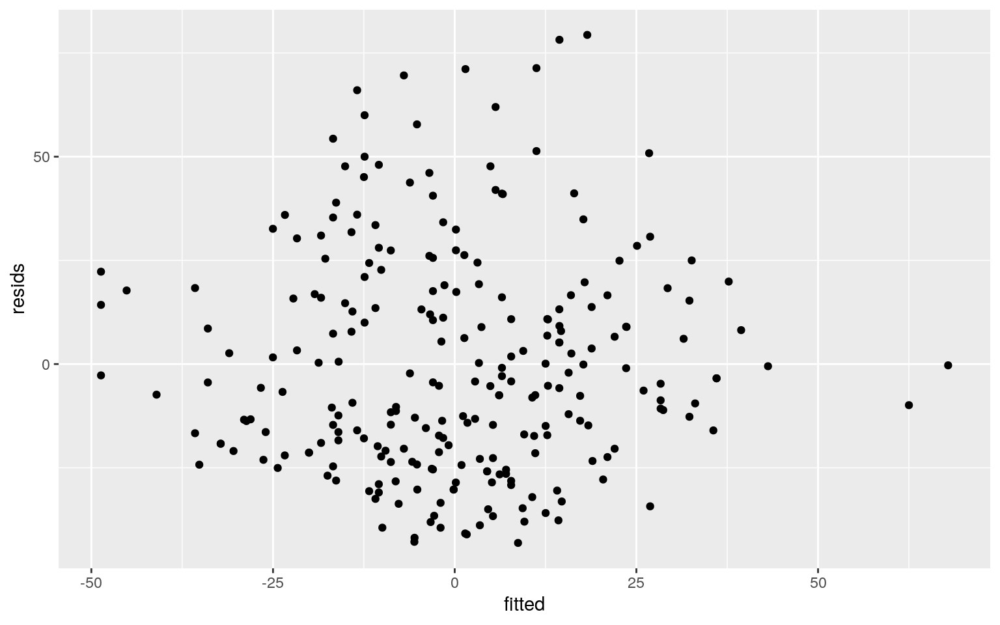
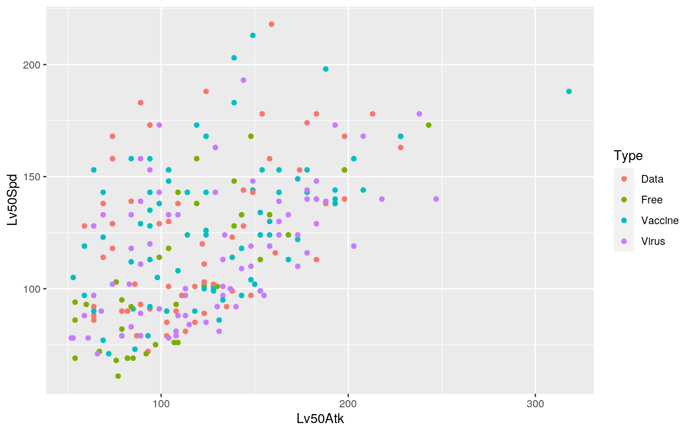
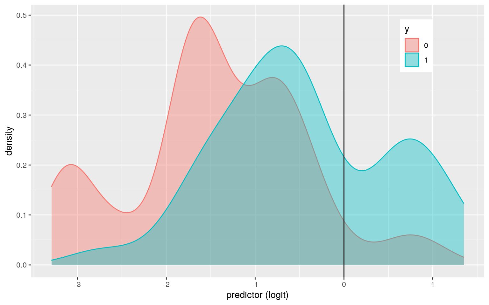
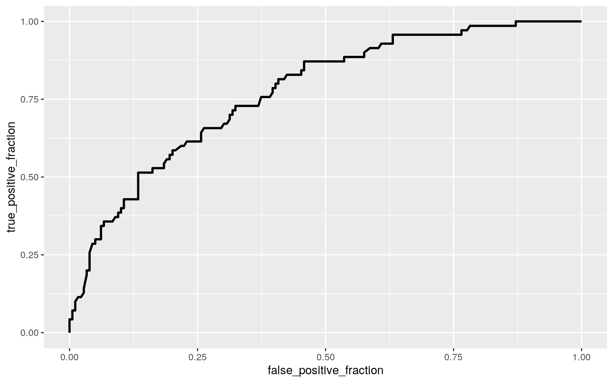

library(tidyverse)
library(readr)
Digimon <- read.csv("DigiDB_digimonlist.csv")
digimon<-Digimon %>% dplyr::rename(Lv50HP = "Lv.50.HP",Lv50SP="Lv50.SP",Lv50Atk="Lv50.Atk",Lv50Def="Lv50.Def",Lv50Int="Lv50.Int",Lv50Spd="Lv50.Spd")
head(digimon)## Number Digimon Stage Type Attribute Memory Equip.Slots
Lv50HP Lv50SP Lv50Atk Lv50Def
## 1 1 Kuramon Baby Free Neutral 2 0 590 77 79 69
## 2 2 Pabumon Baby Free Neutral 2 0 950 62 76 76
## 3 3 Punimon Baby Free Neutral 2 0 870 50 97 87
## 4 4 Botamon Baby Free Neutral 2 0 690 68 77 95
## 5 5 Poyomon Baby Free Neutral 2 0 540 98 54 59
## 6 6 Koromon In-Training Free Fire 3 0 940 52 109 93
## Lv50Int Lv50Spd
## 1 68 95
## 2 69 68
## 3 50 75
## 4 76 61
## 5 95 86
## 6 52 76#Actual MANOVA
man1<-manova(cbind(Lv50HP,Lv50SP,Lv50Atk, Lv50Def, Lv50Int, Lv50Spd)~Attribute, data=digimon)
summary(man1)## Df Pillai approx F num Df den Df Pr(>F)
## Attribute 8 0.75854 4.3416 48 1440 < 2.2e-16 ***
## Residuals 240
## ---
## Signif. codes: 0 '***' 0.001 '**' 0.01 '*' 0.05 '.' 0.1
' ' 1#Mean values in each group
digimon%>%group_by(Attribute)%>%summarize(mean(Lv50HP),mean(Lv50SP),mean(Lv50Atk),mean(Lv50Def),mean(Lv50Int),mean(Lv50Spd))%>%kable#Mean values of each attribute in each combat stat category| Attribute | mean(Lv50HP) | mean(Lv50SP) | mean(Lv50Atk) | mean(Lv50Def) | mean(Lv50Int) | mean(Lv50Spd) |
|---|---|---|---|---|---|---|
| Dark | 1180.000 | 128.35135 | 129.32432 | 106.7568 | 136.48649 | 131.8649 |
| Earth | 1282.083 | 93.37500 | 129.20833 | 131.6667 | 89.91667 | 106.8333 |
| Electric | 1222.400 | 105.80000 | 131.92000 | 137.2800 | 110.60000 | 116.1600 |
| Fire | 1287.576 | 91.54545 | 142.18182 | 114.9697 | 86.75758 | 119.0606 |
| Light | 1152.759 | 137.03448 | 111.24138 | 118.6552 | 145.89655 | 134.1379 |
| Neutral | 1172.143 | 100.57143 | 126.57143 | 112.1786 | 99.14286 | 113.0000 |
| Plant | 1199.200 | 100.52000 | 110.08000 | 116.0000 | 109.92000 | 104.9600 |
| Water | 1271.667 | 115.83333 | 97.95833 | 110.0000 | 128.00000 | 106.9167 |
| Wind | 1136.667 | 108.16667 | 135.66667 | 105.0000 | 99.33333 | 144.1667 |
#ANOVAs
summary.aov(man1) #All significantly different, except for Lv50HP ## Response Lv50HP :
## Df Sum Sq Mean Sq F value Pr(>F)
## Attribute 8 718646 89831 0.8404 0.5679
## Residuals 240 25654359 106893
##
## Response Lv50SP :
## Df Sum Sq Mean Sq F value Pr(>F)
## Attribute 8 57590 7198.7 8.4849 3.709e-10 ***
## Residuals 240 203621 848.4
## ---
## Signif. codes: 0 '***' 0.001 '**' 0.01 '*' 0.05 '.' 0.1
' ' 1
##
## Response Lv50Atk :
## Df Sum Sq Mean Sq F value Pr(>F)
## Attribute 8 43403 5425.4 2.7519 0.006336 **
## Residuals 240 473169 1971.5
## ---
## Signif. codes: 0 '***' 0.001 '**' 0.01 '*' 0.05 '.' 0.1
' ' 1
##
## Response Lv50Def :
## Df Sum Sq Mean Sq F value Pr(>F)
## Attribute 8 24754 3094.21 3.2105 0.001746 **
## Residuals 240 231309 963.79
## ---
## Signif. codes: 0 '***' 0.001 '**' 0.01 '*' 0.05 '.' 0.1
' ' 1
##
## Response Lv50Int :
## Df Sum Sq Mean Sq F value Pr(>F)
## Attribute 8 102915 12864.4 9.4853 2.185e-11 ***
## Residuals 240 325498 1356.2
## ---
## Signif. codes: 0 '***' 0.001 '**' 0.01 '*' 0.05 '.' 0.1
' ' 1
##
## Response Lv50Spd :
## Df Sum Sq Mean Sq F value Pr(>F)
## Attribute 8 40675 5084.4 5.4615 2.441e-06 ***
## Residuals 240 223428 931.0
## ---
## Signif. codes: 0 '***' 0.001 '**' 0.01 '*' 0.05 '.' 0.1
' ' 1#Post-Hoc tests
pairwise.t.test(digimon$Lv50SP, digimon$Attribute, p.adj = "none")##
## Pairwise comparisons using t tests with pooled SD
##
## data: digimon$Lv50SP and digimon$Attribute
##
## Dark Earth Electric Fire Light Neutral Plant Water
## Earth 7.4e-06 - - - - - - -
## Electric 0.00308 0.13683 - - - - - -
## Fire 2.9e-07 0.81508 0.06617 - - - - -
## Light 0.23055 1.4e-07 0.00011 3.5e-09 - - - -
## Neutral 0.00018 0.37534 0.51479 0.22899 3.9e-06 - - -
## Plant 0.00028 0.39154 0.52221 0.24637 7.0e-06 0.99489 -
-
## Water 0.10237 0.00808 0.22925 0.00211 0.00889 0.06083
0.06705 -
## Wind 0.00873 0.07983 0.77641 0.03443 0.00040 0.34950
0.35921 0.36280
##
## P value adjustment method: nonepairwise.t.test(digimon$Lv50Atk, digimon$Attribute, p.adj = "none")##
## Pairwise comparisons using t tests with pooled SD
##
## data: digimon$Lv50Atk and digimon$Attribute
##
## Dark Earth Electric Fire Light Neutral Plant Water
## Earth 0.99206 - - - - - - -
## Electric 0.82155 0.83096 - - - - - -
## Fire 0.22771 0.27719 0.38428 - - - - -
## Light 0.10188 0.14386 0.08922 0.00665 - - - -
## Neutral 0.80472 0.83113 0.66195 0.17250 0.19379 - - -
## Plant 0.09542 0.13300 0.08331 0.00687 0.92373 0.17835 -
-
## Water 0.00753 0.01549 0.00795 0.00026 0.27942 0.02137
0.34039 -
## Wind 0.58627 0.61482 0.76804 0.58492 0.04735 0.46223
0.04487 0.00358
##
## P value adjustment method: nonepairwise.t.test(digimon$Lv50Def, digimon$Attribute, p.adj = "none")##
## Pairwise comparisons using t tests with pooled SD
##
## data: digimon$Lv50Def and digimon$Attribute
##
## Dark Earth Electric Fire Light Neutral Plant Water
## Earth 0.00245 - - - - - - -
## Electric 0.00019 0.52752 - - - - - -
## Fire 0.27032 0.04611 0.00721 - - - - -
## Light 0.12358 0.13013 0.02889 0.64135 - - - -
## Neutral 0.48633 0.02493 0.00362 0.72671 0.43182 - - -
## Plant 0.25128 0.07869 0.01611 0.90050 0.75426 0.65503 -
-
## Water 0.69055 0.01637 0.00235 0.55126 0.31337 0.80105
0.49950 -
## Wind 0.82925 0.00322 0.00034 0.23246 0.11226 0.40666
0.21623 0.57742
##
## P value adjustment method: nonepairwise.t.test(digimon$Lv50Int , digimon$Attribute, p.adj = "none")##
## Pairwise comparisons using t tests with pooled SD
##
## data: digimon$Lv50Int and digimon$Attribute
##
## Dark Earth Electric Fire Light Neutral Plant Water
## Earth 2.5e-06 - - - - - - -
## Electric 0.00711 0.05053 - - - - - -
## Fire 4.8e-08 0.74943 0.01534 - - - - -
## Light 0.30392 9.3e-08 0.00053 1.3e-09 - - - -
## Neutral 7.0e-05 0.36870 0.25934 0.19182 2.9e-06 - - -
## Plant 0.00576 0.05854 0.94800 0.01848 0.00042 0.28861 -
-
## Water 0.38016 0.00041 0.09957 4.2e-05 0.07951 0.00525
0.08710 -
## Wind 0.00015 0.37663 0.28545 0.20429 7.4e-06 0.98518
0.31546 0.00750
##
## P value adjustment method: nonepairwise.t.test(digimon$Lv50Spd, digimon$Attribute, p.adj = "none")##
## Pairwise comparisons using t tests with pooled SD
##
## data: digimon$Lv50Spd and digimon$Attribute
##
## Dark Earth Electric Fire Light Neutral Plant Water
## Earth 0.00196 - - - - - - -
## Electric 0.04793 0.28585 - - - - - -
## Fire 0.08094 0.13654 0.72025 - - - - -
## Light 0.76414 0.00135 0.03184 0.05338 - - - -
## Neutral 0.01427 0.46821 0.70696 0.44024 0.00949 - - -
## Plant 0.00077 0.83007 0.19560 0.08262 0.00055 0.33921 -
-
## Water 0.00203 0.99246 0.29017 0.13922 0.00140 0.47423
0.82263 -
## Wind 0.12529 3.2e-05 0.00150 0.00241 0.23479 0.00030
1.1e-05 3.3e-05
##
## P value adjustment method: none#Prob of at least one type I errir is
1-(0.95^187) ## [1] 0.9999317#Bonferroni correction
0.05/187 #Alpha/Number of test## [1] 0.0002673797#Checking for MANOVA assumptions
library(rstatix)
group <- digimon$Attribute
DVs <- digimon %>% select(Lv50SP,Lv50Atk,Lv50Def,Lv50Int,Lv50Spd)
sapply(split(DVs,group), mshapiro_test)## Dark Earth Electric Fire Light Neutral Plant
## statistic 0.8402922 0.6789064 0.8272296 0.824353
0.9185112 0.6665295 0.8462331
## p.value 9.416849e-05 5.366875e-06 0.0006707578
9.747343e-05 0.02795997 9.919731e-07 0.001495115
## Water Wind
## statistic 0.6870735 0.8356848
## p.value 6.828456e-06 0.001199333library(dplyr)
mutated<-digimon
mutated <- mutate(digimon, y = ifelse(Type == "Virus", 1, 0))
mutated%>%group_by(y)%>%summarize(means=mean(Lv50Atk))%>%summarize(diff(means))## # A tibble: 1 x 1
## `diff(means)`
## <dbl>
## 1 8.83ggplot(mutated,aes(Lv50Atk,fill=y))+geom_histogram(bins=6.5)+
facet_wrap(~y,ncol=2)+theme(legend.position="none")
set.seed(1234)
rand_dist<-vector()
for(i in 1:5000){
new<-data.frame(Lv50atk=sample(mutated$Lv50Atk),y=mutated$y)
rand_dist[i]<-mean(new[new$y=="1",]$Lv50atk)-
mean(new[new$y=="0",]$Lv50atk)}
{hist(rand_dist,main="",ylab=""); abline(v = c(-8.828246, 8.828246),col="red")}
mean(rand_dist>8.828246 | rand_dist < -8.828246)## [1] 0.15163. (35 pts) Build a linear regression model predicting one of your response variables from at least 2 other variables, including their interaction. Mean-center any numeric variables involved in the interaction.
ggplot() using geom_smooth(method="lm"). If your interaction is numeric by numeric, refer to code in the slides to make the plot or check out the interactions package, which makes this easier. If you have 3 or more predictors, just chose two of them to plot for convenience. (8)coeftest(..., vcov=vcovHC(...)). Discuss significance of results, including any changes from before/after robust SEs if applicable. (8)library(sandwich); library(lmtest)
digimon1<-digimon
#Center grabbed speed and attack power
digimon1$spd_c<-digimon1$Lv50Spd-mean(digimon1$Lv50Spd,na.rm=T)
digimon1$atk_c<-digimon1$Lv50Atk-mean(digimon1$Lv50Atk,na.rm=T)
#Linear regression
fit00<-lm(spd_c~atk_c*Type,data=digimon1)
summary(fit00) #Multiple R-squared: 0.3293##
## Call:
## lm(formula = spd_c ~ atk_c * Type, data = digimon1)
##
## Residuals:
## Min 1Q Median 3Q Max
## -43.12 -20.96 -4.74 16.60 79.36
##
## Coefficients:
## Estimate Std. Error t value Pr(>|t|)
## (Intercept) 5.81159 3.51785 1.652 0.0998 .
## atk_c 0.36049 0.08547 4.218 3.49e-05 ***
## TypeFree -13.00375 5.85168 -2.222 0.0272 *
## TypeVaccine 0.85297 4.79021 0.178 0.8588
## TypeVirus -10.78397 4.63458 -2.327 0.0208 *
## atk_c:TypeFree 0.22776 0.13419 1.697 0.0909 .
## atk_c:TypeVaccine -0.04400 0.11006 -0.400 0.6897
## atk_c:TypeVirus -0.02929 0.10644 -0.275 0.7835
## ---
## Signif. codes: 0 '***' 0.001 '**' 0.01 '*' 0.05 '.' 0.1
' ' 1
##
## Residual standard error: 27.11 on 241 degrees of freedom
## Multiple R-squared: 0.3293, Adjusted R-squared: 0.3099
## F-statistic: 16.91 on 7 and 241 DF, p-value: < 2.2e-16#Regression plot
ggplot(digimon1, aes(spd_c,atk_c, color = Type))+geom_point(aes(color=Type))+geom_smooth(method="lm")
resids<-lm(spd_c~atk_c*Type,data=digimon1)$residuals
ggplot()+geom_histogram(aes(resids),bins=10)
fitted<-lm(spd_c~atk_c*Type,data=digimon1)$fitted.values
ggplot()+geom_point(aes(fitted,resids))
ggplot(digimon1,aes(Lv50Atk,Lv50Spd,color=Type))+geom_point()
coeftest(fit00)##
## t test of coefficients:
##
## Estimate Std. Error t value Pr(>|t|)
## (Intercept) 5.811585 3.517849 1.6520 0.09983 .
## atk_c 0.360486 0.085469 4.2178 3.494e-05 ***
## TypeFree -13.003748 5.851680 -2.2222 0.02720 *
## TypeVaccine 0.852973 4.790212 0.1781 0.85882
## TypeVirus -10.783969 4.634580 -2.3268 0.02080 *
## atk_c:TypeFree 0.227755 0.134193 1.6972 0.09095 .
## atk_c:TypeVaccine -0.043996 0.110063 -0.3997 0.68970
## atk_c:TypeVirus -0.029286 0.106444 -0.2751 0.78345
## ---
## Signif. codes: 0 '***' 0.001 '**' 0.01 '*' 0.05 '.' 0.1
' ' 1coeftest(fit00, vcov = vcovHC(fit00))##
## t test of coefficients:
##
## Estimate Std. Error t value Pr(>|t|)
## (Intercept) 5.811585 4.138519 1.4043 0.16153
## atk_c 0.360486 0.086209 4.1815 4.055e-05 ***
## TypeFree -13.003748 5.439990 -2.3904 0.01760 *
## TypeVaccine 0.852973 5.404247 0.1578 0.87472
## TypeVirus -10.783969 5.009040 -2.1529 0.03232 *
## atk_c:TypeFree 0.227755 0.103412 2.2024 0.02858 *
## atk_c:TypeVaccine -0.043996 0.101113 -0.4351 0.66387
## atk_c:TypeVirus -0.029286 0.099783 -0.2935 0.76939
## ---
## Signif. codes: 0 '***' 0.001 '**' 0.01 '*' 0.05 '.' 0.1
' ' 1#BootstrappedSEs
set.seed(1234)
boot_dat<- sample_frac(digimon1, replace=T)
samp_distn<-replicate(5000, {
boot_dat <- sample_frac(digimon1, replace=T) #take bootstrap sample of rows
fit <- lm(spd_c~atk_c*Type,data=boot_dat) #fit model on bootstrap sample
coef(fit) #save coefs
})
# Estimated Boostrapped SEs
samp_distn %>% t %>% as.data.frame %>% summarize_all(sd) %>% round(3)## (Intercept) atk_c TypeFree TypeVaccine TypeVirus
atk_c:TypeFree atk_c:TypeVaccine atk_c:TypeVirus
## 1 4.102 0.088 5.463 5.338 4.927 0.108 0.105 0.1015. (25 pts) Fit a logistic regression model predicting a binary variable (if you don't have one, make/get one) from at least two explanatory variables (interaction not necessary).
class_diag <- function(probs,truth){
#CONFUSION MATRIX: CALCULATE ACCURACY, TPR, TNR, PPV
tab<-table(factor(probs>.5,levels=c("FALSE","TRUE")),truth)
acc=sum(diag(tab))/sum(tab)
sens=tab[2,2]/colSums(tab)[2]
spec=tab[1,1]/colSums(tab)[1]
ppv=tab[2,2]/rowSums(tab)[2]
f1=2*(sens*ppv)/(sens+ppv)
if(is.numeric(truth)==FALSE & is.logical(truth)==FALSE) truth<-as.numeric(truth)-1
#CALCULATE EXACT AUC
ord<-order(probs, decreasing=TRUE)
probs <- probs[ord]; truth <- truth[ord]
TPR=cumsum(truth)/max(1,sum(truth))
FPR=cumsum(!truth)/max(1,sum(!truth))
dup<-c(probs[-1]>=probs[-length(probs)], FALSE)
TPR<-c(0,TPR[!dup],1); FPR<-c(0,FPR[!dup],1)
n <- length(TPR)
auc<- sum( ((TPR[-1]+TPR[-n])/2) * (FPR[-1]-FPR[-n]) )
data.frame(acc,sens,spec,ppv,f1,auc)
}digimon7 <- mutate(digimon, y = ifelse(Type == "Vaccine", 1, 0)) #Binary response variable
fit7<-glm(y~Attribute+Lv50Atk, data=digimon7,family=binomial(link="logit"))
summary(fit7) #Coefficients##
## Call:
## glm(formula = y ~ Attribute + Lv50Atk, family =
binomial(link = "logit"),
## data = digimon7)
##
## Deviance Residuals:
## Min 1Q Median 3Q Max
## -1.7025 -0.8088 -0.5567 0.8325 2.3814
##
## Coefficients:
## Estimate Std. Error z value Pr(>|z|)
## (Intercept) -3.625485 0.901165 -4.023 5.74e-05 ***
## AttributeEarth 1.285776 0.913831 1.407 0.15942
## AttributeElectric 1.725609 0.868395 1.987 0.04691 *
## AttributeFire 2.134905 0.818107 2.610 0.00907 **
## AttributeLight 3.817972 0.845391 4.516 6.30e-06 ***
## AttributeNeutral 1.366384 0.883440 1.547 0.12194
## AttributePlant 1.344729 0.918607 1.464 0.14323
## AttributeWater 2.381460 0.864914 2.753 0.00590 **
## AttributeWind 2.531076 0.840373 3.012 0.00260 **
## Lv50Atk 0.005558 0.003636 1.528 0.12642
## ---
## Signif. codes: 0 '***' 0.001 '**' 0.01 '*' 0.05 '.' 0.1
' ' 1
##
## (Dispersion parameter for binomial family taken to be 1)
##
## Null deviance: 295.82 on 248 degrees of freedom
## Residual deviance: 251.76 on 239 degrees of freedom
## AIC: 271.76
##
## Number of Fisher Scoring iterations: 5exp(coef(fit7)) %>% round(3)## (Intercept) AttributeEarth AttributeElectric
AttributeFire AttributeLight
## 0.027 3.617 5.616 8.456 45.512
## AttributeNeutral AttributePlant AttributeWater
AttributeWind Lv50Atk
## 3.921 3.837 10.821 12.567 1.006prob <- predict(fit7, type = "response") #save predicted probabilities
table(predict = as.numeric(prob > 0.5), truth = digimon7$y) %>% addmargins() #Confusion Matrix## truth
## predict 0 1 Sum
## 0 168 50 218
## 1 11 20 31
## Sum 179 70 249class_diag(prob, digimon7$y) # Sensititivety=TPR,Specificity=TNR,Precision=PPV, etc. ## acc sens spec ppv f1 auc
## 1 0.7550201 0.2857143 0.9385475 0.6451613 0.3960396
0.7565443#Density plot
digimon7->digimon8
digimon8$y<-as.factor(digimon8$y)
digimon8$logit<-predict(fit7,type="link")
digimon8%>%ggplot()+geom_density(aes(logit,color=y,fill=y), alpha=.4)+
theme(legend.position=c(.85,.85))+geom_vline(xintercept=0)+xlab("predictor (logit)")
#install.packages("plotROC")
library(plotROC)
digimon7->digimon6
fit<-lm(y~Lv50Atk*Attribute,data=digimon6,family="binomial")
digimon6$prob<-predict(fit,type="response")
digimon6$Attribute<-as.factor(digimon6$Attribute)
ROCplot<-ggplot(digimon6)+geom_roc(aes(d=y,m=prob), n.cuts=0)
ROCplot
calc_auc(ROCplot)## PANEL group AUC
## 1 1 -1 0.77306466. (25 pts) Perform a logistic regression predicting the same binary response variable from ALL of the rest of your variables (the more, the better!)
lambda.1se). Discuss which variables are retained. (5)digimon7 <- mutate(digimon, y = ifelse(Type == "Vaccine", 1, 0)) #Binary response variable
fit9<-glm(y~Attribute+Lv50Atk+Lv50HP+Lv50SP+Lv50Def+Lv50Int+Lv50Spd, data=digimon7,family=binomial(link="logit"))
prob1 <- predict(fit9, type = "response")
class_diag(prob1, digimon7$y) %>% round(3)## acc sens spec ppv f1 auc
## 1 0.771 0.329 0.944 0.697 0.447 0.76summary(fit9)##
## Call:
## glm(formula = y ~ Attribute + Lv50Atk + Lv50HP + Lv50SP
+ Lv50Def +
## Lv50Int + Lv50Spd, family = binomial(link = "logit"),
data = digimon7)
##
## Deviance Residuals:
## Min 1Q Median 3Q Max
## -1.6906 -0.8030 -0.5394 0.7875 2.3629
##
## Coefficients:
## Estimate Std. Error z value Pr(>|z|)
## (Intercept) -4.1616066 1.2061574 -3.450 0.00056 ***
## AttributeEarth 1.3177820 0.9704605 1.358 0.17450
## AttributeElectric 1.6843807 0.9114307 1.848 0.06459 .
## AttributeFire 2.2152322 0.8658287 2.559 0.01051 *
## AttributeLight 3.7053144 0.8502846 4.358 1.31e-05 ***
## AttributeNeutral 1.4207493 0.9009994 1.577 0.11483
## AttributePlant 1.3783469 0.9469737 1.456 0.14552
## AttributeWater 2.4247996 0.8857459 2.738 0.00619 **
## AttributeWind 2.4630616 0.8977915 2.743 0.00608 **
## Lv50Atk 0.0028020 0.0076384 0.367 0.71375
## Lv50HP -0.0002032 0.0006933 -0.293 0.76950
## Lv50SP -0.0015372 0.0155446 -0.099 0.92123
## Lv50Def 0.0040250 0.0068182 0.590 0.55497
## Lv50Int 0.0008612 0.0095524 0.090 0.92817
## Lv50Spd 0.0059847 0.0110552 0.541 0.58827
## ---
## Signif. codes: 0 '***' 0.001 '**' 0.01 '*' 0.05 '.' 0.1
' ' 1
##
## (Dispersion parameter for binomial family taken to be 1)
##
## Null deviance: 295.82 on 248 degrees of freedom
## Residual deviance: 250.52 on 234 degrees of freedom
## AIC: 280.52
##
## Number of Fisher Scoring iterations: 5#10 fold cross
set.seed(1234)
k=10 #choose number of folds
data<-digimon7[sample(nrow(digimon7)),] #randomly order rows
folds<-cut(seq(1:nrow(digimon7)),breaks=k,labels=F) #create 10 folds
diags<-NULL
for(i in 1:k){
## Create training and test sets
train<-data[folds!=i,]
test<-data[folds==i,]
truth<-test$y
## Train model on training set
fit<-glm(y~Attribute+Lv50Atk+Lv50HP+Lv50SP+Lv50Def+Lv50Int+Lv50Spd,data=train,family="binomial")
probs<-predict(fit,newdata = test,type="response")
## Test model on test set (save all k results)
diags<-rbind(diags,class_diag(probs,truth))
}
diags%>%summarize_all(mean) %>% round(3)## acc sens spec ppv f1 auc
## 1 0.73 0.276 0.902 NaN NaN 0.683#Lasso
library(glmnet)
library(dplyr)
digimon4<-digimon7
digimon4$y<-as.factor(digimon4$y)
digimon4$Attribute<-factor(digimon4$Attribute)
y <- as.matrix(digimon4$y) #Grab response
x <- model.matrix(y~Attribute+Lv50Atk+Lv50HP+Lv50SP+Lv50Def+Lv50Int+Lv50Spd,data=digimon4)[,-1]#Grab predictors
cv <- cv.glmnet(x, y, family = "binomial") #Picks optimal value for lambda
lasso <- glmnet(x, y, family = "binomial", lambda = cv$lambda.1se)
coef(lasso) #Values that show up are the most predictive variables## 15 x 1 sparse Matrix of class "dgCMatrix"
## s0
## (Intercept) -0.9845927
## AttributeEarth .
## AttributeElectric .
## AttributeFire .
## AttributeLight 0.3676875
## AttributeNeutral .
## AttributePlant .
## AttributeWater .
## AttributeWind .
## Lv50Atk .
## Lv50HP .
## Lv50SP .
## Lv50Def .
## Lv50Int .
## Lv50Spd .#LASSO CV
set.seed(2345)
digimon4<-digimon4 %>%mutate(AttributeLight=ifelse(digimon4$Attribute=="Light",1,0))
k=10 #choose number of folds
data1<-digimon4[sample(nrow(digimon4)),] #randomly order rows
folds<-cut(seq(1:nrow(digimon4)),breaks=k,labels=F) #create folds
diags<-NULL
for(i in 1:k){
train<-data1[folds!=i,]
test<-data1[folds==i,]
truth<-test$y
fit<-lm(y~AttributeLight,data=train,family="binomial")
probs<-predict(fit,newdata = test,type="response")
diags<-rbind(diags,class_diag(probs,truth))
}
diags%>%summarize_all(mean)%>%round(3)## acc sens spec ppv f1 auc
## 1 0.281 1 0 0.281 0.434 0.609Note that the echo = FALSE parameter was added to the code chunk to prevent printing of the R code that generated the plot.